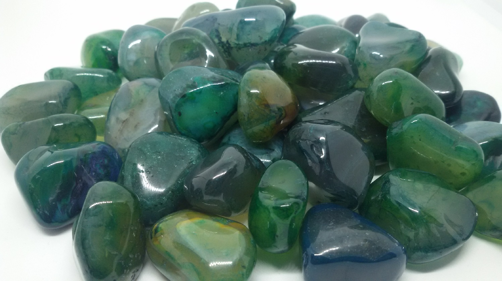

Ágata
Significado
A Ágata promove a aceitação do nosso Eu verdadeiro, estimula a auto confiança, eleva a nossa consciência e nos estimula a ver a vida com mais felicidade e otimismo.
Suas vibrações favorecem a memória, melhoram a concentração, fortalecem a mente, elevam as energias dos ambientes e harmonizam todo nosso campo energético pessoal.
Ela também favorece o crescimento espiritual, equilibra as emoções e a mente e segundo a tradição ajuda a atrair riquezas e ganhos inesperados.
Efeitos Terapêuticos
Colocada sobre o coração, ela cura indisposições emocionais que impedem a aceitação do amor.
Sobre o abdômen ou ingerida em forma de elixir, a Ágata estimula o processo digestivo e alivia a gastrite.
Essa pedra também cura os olhos, o estômago, o útero, fortalece os vasos sanguíneos e cura problemas de pele.
← Voltar